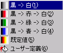

レイアウトファイル（〜.propety）はRTSファイル読み込み時に表示状態を復元するためのファイルです。メイン画面メニューの[ファイル]−[レイアウトの保存]を選択すると、現在表示中の状態をレイアウトファイルに保存できます。ファイル名はRTSファイル名にpropetyの拡張子を付けて保存されます。レイアウトファイルには以下の情報が含まれます。
| 項目 | 内容 |
| ステップ | 現在表示中のステップ |
| 変位スケール | なし、1.0基準、最大値基準、実際の値の何れか |
| 変位凡例 | 描画するか否か |
| 変位前のメッシュ | 描画するか否か |
| ベクトルアイテム | 表示するベクトルアイテムの種類 |
| ベクトルスケール | なし、1.0基準、最大値基準の何れか |
| ベクトル凡例 | 描画するか否か |
| コンタアイテム | 表示するコンタアイテムの種類 |
| コンタ配色 |  |
| コンタ凡例 | 描画するか否か |
| コンタ値設定 | コンタ値を設定するか否か、最大値、最小値、分割数 |